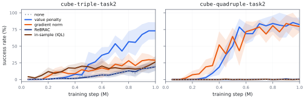

Put fruit in the pot and close the lid
EXPO-FT offline2online (Failure)
SQAM offline2online (Success)
TL;DR. SQAM fine-tunes flow policies with a closed-form scalar adjoint that avoids the vector–Jacobian products of adjoint matching, improving on the hardest OGBench tasks and a real bimanual robot.
Averaged over a batch of states, the velocity Jacobian of a pretrained flow policy concentrates on its diagonal. Approximating it by a scalar multiple of the identity solves the lean adjoint ODE in closed form, which gives the scalar adjoint. It needs one critic gradient at the sampled action and no policy vector–Jacobian product at any flow step.

The scalar adjoint uses the critic gradient directly at the policy-generated action \(a_\pi\). SQAM therefore adds a value penalty on the critic at \(a_\pi\), relative to the dataset action.

On 50 OGBench tasks across 10 domains, the gains of SQAM concentrate on the four hardest domains, adding 18 to 35 points over the strongest baseline.
| Method | AL | AG | HM | HL | Scene | P33 | P44 | C2 | C3 | C4 | All 50 |
|---|---|---|---|---|---|---|---|---|---|---|---|
| FQL | 38 | 2 | 74 | 2 | 70 | 25 | 9 | 44 | 7 | 9 | 28 |
| CGQL-L | 48 | 7 | 57 | 6 | 58 | 0 | 0 | 55 | 0 | 1 | 23 |
| DSRL | 53 | 1 | 53 | 1 | 80 | 100 | 61 | 72 | 34 | 9 | 46 |
| IFQL | 29 | 12 | 93 | 30 | 36 | 64 | 42 | 9 | 24 | 6 | 35 |
| QAM | 62 | 29 | 64 | 4 | 64 | 15 | 1 | 71 | 19 | 18 | 35 |
| QAM-E | 86 | 6 | 60 | 4 | 63 | 89 | 54 | 71 | 11 | 9 | 45 |
| TRQAM | 89 | 41 | 84 | 36 | 79 | 100 | 99 | 81 | 50 | 19 | 68 |
| SQAM | 91 | 62 | 94 | 54 | 79 | 100 | 85 | 58 | 72 | 54 | 75 |
Mean success rate (%); each domain contains five tasks. Abbreviations follow the manuscript's Table 1. Standard deviations are reported in the paper.
SQAM fine-tunes RLDX-1, a pretrained vision-language-action policy, on a bimanual robot with two 20-DoF dexterous hands. It improves over supervised fine-tuning on all three tasks.
| Method | Put & Close | Flip Bag | Place Straw |
|---|---|---|---|
| SFT | 4/30 | 15/30 | 7/30 |
| EXPO-FT offline | 5/30 | 8/30 | 0/30 |
| EXPO-FT offline2online | 3/30 | 15/30 | 0/30 |
| SQAM offline | 8/30 | 20/30 | 13/30 |
| SQAM offline2online | 13/30 | 25/30 | 15/30 |
Successful held-out episodes out of 30 per task. SQAM improves over supervised fine-tuning on all three tasks.
@article{dong2026sqam,
author = {Yonghoon Dong and Minsung Yoon and Jaehyuk Kim and
Jungwoo Park and Changyeon Kim and Jinwoo Shin},
title = {Q-Learning with Scalar Adjoint Matching},
journal = {arXiv preprint arXiv:ARXIV_ID},
year = {2026}
}